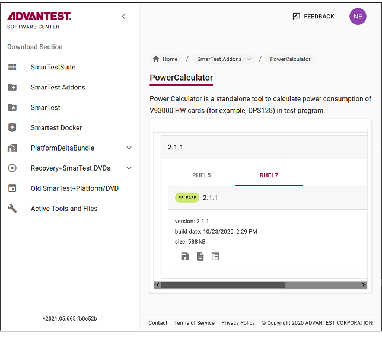
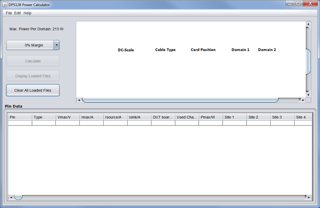

Using the DPS128 Power Calculator
The DPS128 Power Calculator is a tool to help you to:
- Configure a new DPS128 test system to test a new device
- Check and enhance an existing DPS128 test system to test a new device
- Migrate from DPS32 cards to the DPS64 and DPS128 cards
Download of the DPS128 Power Calculator
- Open the Advantest Software Center in a browser: https://softwarecenter.advantest.com/
Login with your credentials.
-
Download the Power Calculator from the Advantest Software Center: https://softwarecenter.advantest.com/.
The Power Calculator located under .

-
Scroll to and select the version you want to install ( for example, 2.1.1) and expand to display the details.
- Select the required operating system.
- Expand the release version.
-
Download the Power Calculator package by clicking the
 icon.
icon.The download dialog for the package is displayed.
-
Download and save the package by clicking OK and if requested, specify a destination folder.
The selected Power Calculator package is downloaded to your browser's download folder.
Starting the DPS128 Power Calculator
- Windows: Double-click the PowerCalc.jar file.1)
Linux: Open a shell window, browse to the location of extracted PowerCalc.jar file and start the program from the command line. The default command is
- java -jar PowerCalc.jar
To find the location of your Java installation, enter the command: whereis java
The DPS128 Power Calculator tool opens:

Data entry in SmarTest 7
Input data includes pin configuration files and DC scale limits files that you typically export from your existing test system using the export functionality of SmarTest as follows:
- From the Test Program Explorer open , right-click an item, for example, DPS Pins, and choose Export. The Export 93000 Setup window opens.
- In this window, click Browse. The Enter or Select File to Export window opens.
- Enter a file name, choose the location to which the CSV file should be saved and click OK. You return to the Export 93000 Setup window.
- In the Setups section, choose the items you want to export, for example DPS Pins, and then click Finish.
- Repeat the above steps for the DC Scale Limits.
- Now you can open the CSV file using a spreadsheet program or a text editor to check its content.
If required, you can edit the resulting CSV-format files using common office tools such as Microsoft Excel or Apache OpenOffice.
Manual creation and editing of pin data can also be done directly in the Pin Data table of the DPS128 Power Calculator. You can directly import and load these exported or modified files into SmarTest.